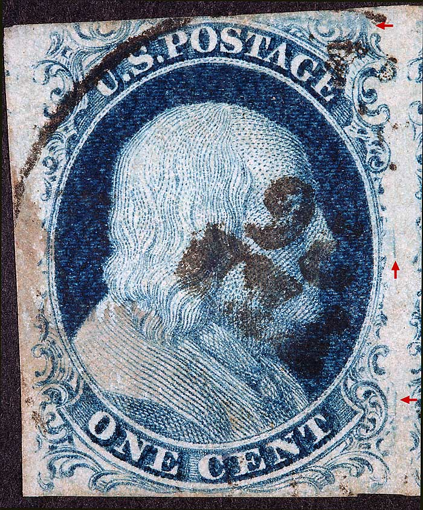
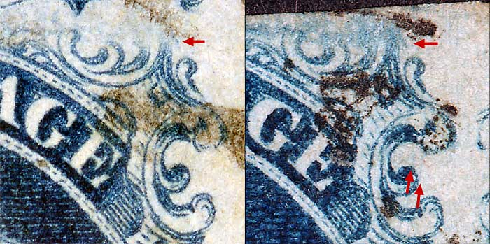
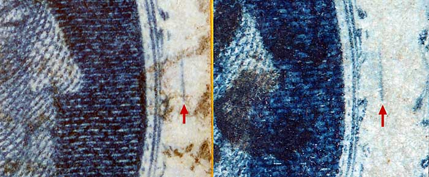
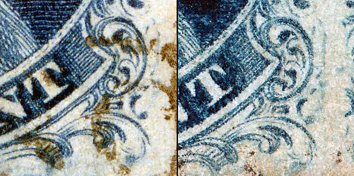

1¢ Franklin Issue of 1851-1857, PLATE 2 Position 17L2, (Scott #7 shown) |
| Blue, Type II, Relief A Issued both imperforate (Scott 7) and perforated (Scott 20). Courtesy of Tyler Moody |
|  |
| Figure 1. (Below) Small blurry dot of color to the right of Ornament Z not illustrated in the Neinken plating diagram but confirmed here as a plating mark of interest. This feature occurs on a number of A relief positions from Plates 2 and 3, many not indicated in Neinken. They are helpful plating aids, but are not unique to any specific position.
 |
| Figure 2. (Below) Detail view of a long vertical line of color in the right margin as illustrated in the Neinken plating diagram. These occur on many A relief positions, some stronger than others. Many but not all are shown in Neinkens plating diagrams. They are helpful plating aids, but are not unique to any specific position.
 |
| Figure 3. (Below) Detail view of a short vertical line of color to the right of Ornament R as illustrated in the Neinken plating diagram. These are remnants of the original die design. Many but not all are shown in Neinkens plating diagrams. They are helpful plating aids, but are not unique to any specific position.
 |
DISCLAIMER and COPYRIGHT INFORMATION: Thanks for visiting this site. I hope you learn something new as we are making new discoveries all the time. You, the visitor, have my permission to link to my pages and to share the INFORMATION with others. The images themselves fall under the fair use guidelines established by the United States Congress and Copyright law. Basically contact us before using. I also ask in return that you send me an e-mail if I have made a mistake, or have made some other technical blunder that in my rush to put these pages up would cause the visitor confusion. Please also visit my other website at www.slingshotvenus.com. and support the live music arts. While your there, be sure to purchase our music. There are not many philatelic rock stars around and we need all the help we can get. :-) I can be reached at: nerdman@ix.netcom.com Update 7.21.10 |